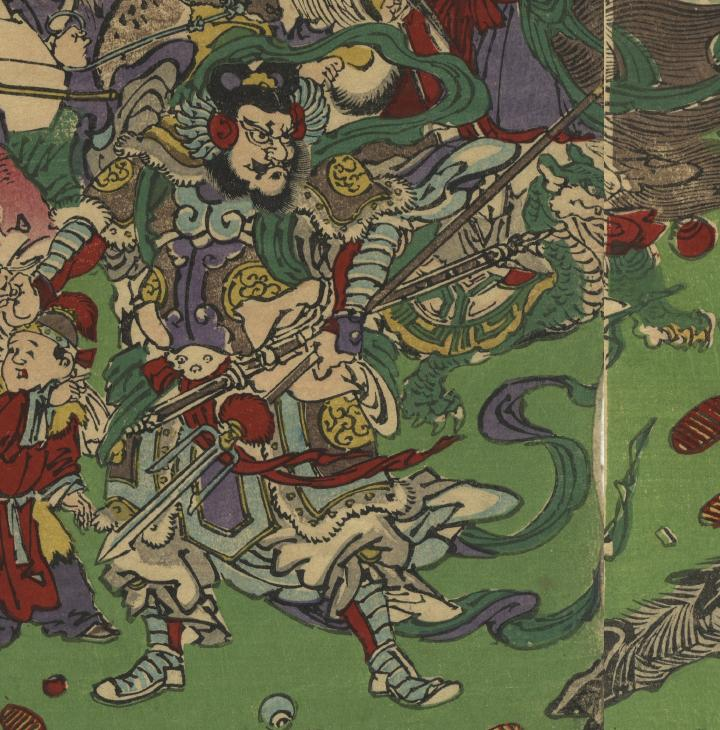

← 图鉴索引

毘沙門天が立っている。
著作者：猩々暁斎／出典：親書誌：U426_nichibunken_0407：七福冨士之萬㐂神；シチフク フジ ノ バンキシン／日付：2015／資源識別子：U426_nichibunken_0407_0001_0003
Copyright (c)2010- International Research Center for Japanese Studies, Kyoto, Japan. All rights reserved.